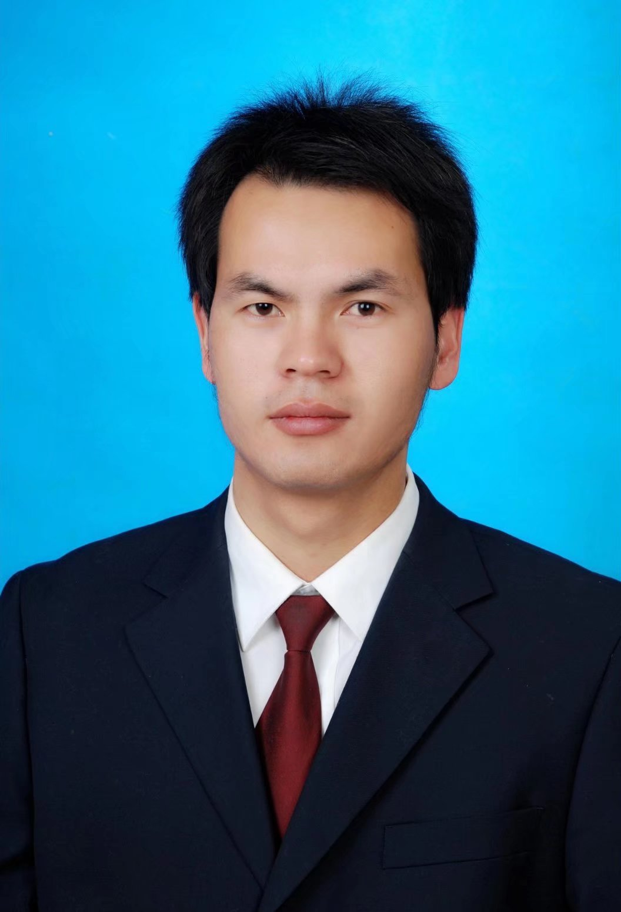

姚 亚 兵
- 兰州理工大学计算机与通信学院，副教授，硕士研究生导师，兰州大学计算机应用技术专业工学博士
- 研究方向：复杂网络与图机器学习； 联系方式：yaoyabing@lut.edu.cn
- 简介：河南洛阳人，研究领域：网络科学与人工智能，主要研究方向为复杂网络与图机器学习，重点关注面向高阶链路预测问题的网络表示学习理论与方法研究，在Applied Intelligence、Knowledge Based System、Physica A等SCI期刊发表论文20余篇。目前主持1项国家自然科学基金地区项目，1项国家留学基金委青年骨干教师出国研修项目，1项甘肃省自然科学基金项目，1项甘肃省高等学校创新基金项目，1项博士科研基金项目，主持完成5项军工横向项目，获软件著作权10余项，2013年取得计算机技术与软件专业技术高级（系统分析师）资格。2019年至今就职于兰州理工大学计算机与通信学院软件工程系，2009年-2018年就职于甘肃省人民检察院检察技术信息处，主要从事面向司法领域的信息智能化软件研发与应用工作，作为骨干参与完成了甘肃省检察机关辅助办案系统、甘肃省行政执法与刑事司法信息共享平台、甘肃省检察机关大数据决策支持平台和全国检察机关统一业务应用软件等平台的研发、应用与推广工作。期间荣立个人二等功1次，被最高人民检察院授予“全国检察技术信息先进个人”称号。
发表论文
科研项目 Go Top
讲授课程 Go Top
- {{course.title}}：{{course.grade}}
获奖情况 Go Top
- {{award.title}} ，获奖学生:{{award.students}}
指导学生 Go Top
{{student.name}}({{student.type}}) {{student.grade}}级 {{student.to}}